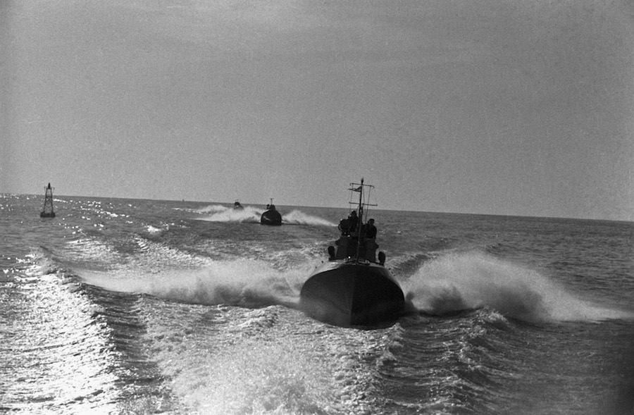
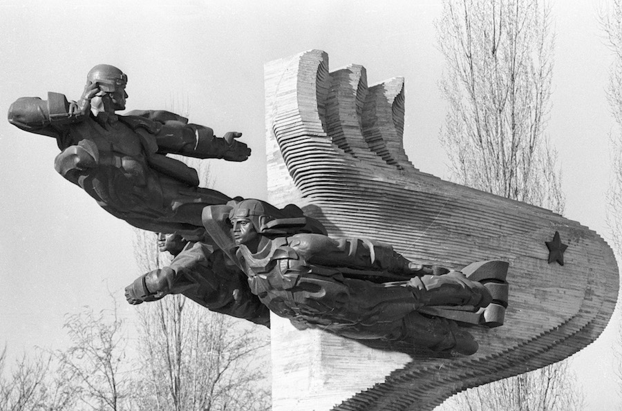

Адэса — горад герой!
У жніўні 1941 гады Адэса была акружаная нямецкімі войскамі. Абарона Адэсы доўжылася 73 дні сіламі арміі і народнага
апалчэння.

Першы штурм Адэсы румынскімі і нямецкімі войскамі быў ажыццёўлены 20 жніўня 1941 года. Наступ 17 дывізій і 7 брыгад
суперніка было спынена савецкімі войскамі ў 10-14 км ад гарадскіх межаў. Штодня 10-12 тыс. Жанчын і падлеткаў выходзілі
на загараджальныя працы: яны капалі акопы, нацягвалі драцяныя загароды. За час абароны адэсіты ўсталявалі 40 тыс. Мін,
вырылі больш за 250 км процітанкавых равоў, збудавалі больш за 250 загараджальных барыкад на вуліцах горада. Падлеткі,
якія працавалі на заводах і фабрыках, вырабілі каля 300 тыс. Ручных гранат і столькі ж процітанкавых і проціпяхотных
мін. Амаль 38 тыс. Адэсіты сышлі ў старыя катакомбы, каб прыняць удзел у абароне роднага горада.
60 ЛЁГКІХ ТАНКАЎ
удзельнічала з боку СССР
200 АФІЦЭРАЎ
загінулі ў дыверсіях партызан

Мноства помнікаў і мемарыялаў Адэсы прысвечана падзеям тых гераічных гадоў. На плошчы "10 красавіка» ўстаноўлена стэла
«Крылы Перамогі» - сімвал Адэсы. Манумент выкананы ў выглядзе крыла чайкі, увенчанага «Залатой Зоркай» горада-героя. У
гонар байцоў партызанскага руху ў прыгарадзе Адэсы створаны мемарыяльны комплекс «Катакомбы». Экспазіцыя ўключае помнік
«Народныя мсціўцы» ў сяле Нерубайское і Музей партызанскай славы, распоженный ў адэскіх катакомбах. Скульптурная
кампазіцыя «Народныя мсціўцы» адлюстроўвае групу партызан, выбрацца з катакомбаў на баявую аперацыю.